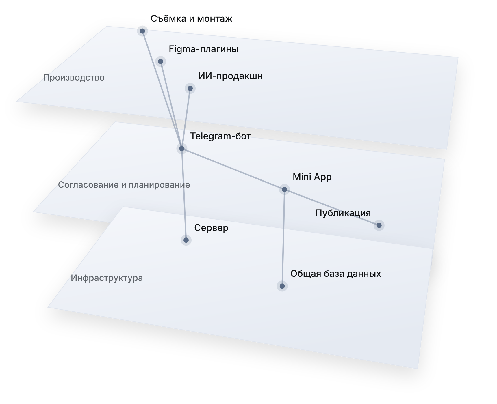

Как я превратил SMM медицинского бренда в управляемую систему: от Telegram-продуктов и собственного сервера до 3D-приложения для врачей.
0
Telegram-продукта
0
Figma-плагина
0
статусов
0
постов
Премиальная стоматологическая клиника, специализирующаяся на сложных хирургических и комплексных случаях. Аудитория премиальная, тематика медицинская, требования к визуалу на уровне эстетики Apple. Каждая единица контента проходит многоступенчатое согласование с руководством и врачами.
Наладить регулярный выпуск контента там, где главным ограничением была не идея и не съёмка, а процесс. Правки терялись в переписках, решения разных людей противоречили друг другу, стандарты менялись, а каждый новый материал собирался вручную с нуля.
Я подошёл к SMM как к продукту. Вместо того чтобы ускорять себя, я построил вокруг контента систему: инструменты согласования и планирования, автоматизацию производства, стандарты бренда и цифровые сервисы для самой клиники. Все продукты спроектированы и запущены мной с использованием ИИ-разработки.
Один сервер и одна база под обоими продуктами: статус материала везде один

Один сервер и одна база под обоими продуктами: статус материала везде один.
Единая точка, через которую проходит весь контент клиники: рилс, карусели, сторис, фото, графика, тексты и озвучка. Переписки, пересланные файлы и устные «вроде согласовали» заменены одним прозрачным процессом.
В системе четыре роли: автор, основной согласующий, второстепенный согласующий и врач. Каждый видит решения остальных в реальном времени: сообщение обновляется, когда кто-то ответил. Финальный статус «Согласовано» ставится только решением основного согласующего. Эту логику я заложил после того, как нашёл сценарий, в котором промежуточное одобрение могло ошибочно закрыть материал.
Список материалов сортируется не по дате, а по приоритету статуса, поэтому в первую очередь видно то, что требует действия.
Правка оставляется текстом прямо к материалу. В новой версии согласующий сразу видит, на что отвечал в прошлый раз. Отдельный раздел собирает все материалы с открытыми правками.
При загрузке бот спрашивает, согласован ли материал с врачом заранее, и фиксирует имя. Если врач одобрил материал лично, автор вносит это в систему, а согласующие получают уведомление и одной кнопкой подтверждают, возвращают на правку или отклоняют. Устные договорённости перестают теряться.
Несколько фото и видео можно загрузить как один материал с названием — тогда согласующие получают их настоящим Telegram-альбомом — или как серию отдельных материалов. Документы и медиа автоматически разводятся по группам, длинные тексты делятся на части без обрезки.
Отдельный сценарий для съёмок с блогерами: дата, врач, нужно ли согласование, изменение планов. Повторный запрос обратной связи уходит сразу всем согласующим, напоминания приходят с названием материала, уведомления выключаются одним переключателем.
Полноценное веб-приложение внутри Telegram, которое заменило рабочее пространство в Notion и работает на одной базе данных с ботом.
Календарь публикаций, где каждая единица контента отмечена тегами платформы, формата и рубрики. Статус согласования подтягивается из бота автоматически: календарь всегда показывает реальное состояние, а не то, что кто-то забыл обновить.
Доска рабочих задач по съёмкам, монтажу и производству. Отдельно — расписание работы с разделением на дни в клинике и удалённую работу, чтобы съёмки планировались под присутствие.
Пользователь определяется по Telegram ID, без логинов и паролей. Автор и согласующие видят интерфейс под свою роль. Светлая палитра, минимализм в духе iOS, плавные переходы: приложение открывается из Telegram на любом телефоне и ощущается как нативное.
Всю серверную часть развернул и сопровождаю сам. VPS на Linux, бот и веб-приложение работают как системные службы с автоматическим перезапуском. Бэкенд на FastAPI, nginx в качестве обратного прокси, собственный поддомен, SSL-сертификаты Let’s Encrypt. При каждом обновлении сверяю контрольные суммы файлов, чтобы на сервер гарантированно попадала актуальная версия.
IP-адрес сервера оказался заблокирован, сервис перестал работать.
После переезда на новый сервер бот заработал, а Mini App у пользователей в России обрывался на загрузке. Я выяснил, что соединение через CDN-прокси ограничивается после первых килобайт.
Вывел поддомен из-под прокси, выпустил SSL-сертификат напрямую на сервере и перенёс службы с сохранением структуры. Сервис восстановлен без потери данных.
Разработал два собственных плагина: для каруселей и для сторис. Пишу текст поста в простой разметке — обложка, смысловые блоки, закрывающий слайд, — а плагин сам раскладывает его по фирменным макетам с правильной типографикой, дисклеймером и тэглайном.
Выстроил процесс генерации и доработки визуала нейросетями под стандарт бренда: товарные фото для карточки клиники на картографических сервисах, фирменные наклейки и упаковка, обложки рилс в единой серии. Отработал методику точной правки генераций: программный контроль положения объектов, центровка логотипов, согласование света, отражений и материалов с исходной сценой.
Настроил пакетный импорт контент-плана в сервис автопостинга через CSV: десятки публикаций загружаются за один раз.
#POST#COVERtitle: гигиенаsubtitle: что стоит знать перед визитом #BLOCKtitle: ЗАЧЕМbody: регулярный уход занимает меньше времени, чем лечение его последствий. #CLOSINGtagline: забота начинается с привычки
Фото- и видеосъёмка клиники, врачей и клинических процессов, монтаж. Сценарии рилс для врачей разных специальностей: хирург-имплантолог, пародонтолог, ортодонт, гнатолог. Каждый сценарий включает дословный текст врача и раскадровку перебивок.
Экспертные карусели, в том числе закреплённый пост с ключевыми клиническими направлениями клиники. В Threads — более 250 постов, включая интерактивные форматы, и ответы в ветках от лица клиники. Имиджевая рубрика об улыбке в истории искусства и культуры связывает культурный контекст с работой клиники.
HTML-письмо с бартерным предложением для блогеров, сценарии визитов и экскурсий по клинике.
0
постов в Threads
Единый свод правил: палитра, шрифт, структура каждого формата, лексика, тон, запрещённые формулировки, правила для текстов, сценариев и промптов для нейросетей. Свод работает как инструкция и для меня, и для ИИ-инструментов, поэтому любой материал с первого черновика звучит голосом бренда.
Эталонная логика ответов в директе: сначала как проходит диагностика, затем как строится лечение, и только потом стоимость. Правила подачи цены, работа с возражениями, единый голос клиники.
Совместно с маркетологом клиники разработал единый стандарт общения администраторов с пациентами по телефону и в переписке, чтобы каждый контакт с клиникой поддерживал премиальное позиционирование бренда. В основе анализ реальных диалогов и расшифровок звонков.
Итог: стандарт из 11 разделов — голос клиники, логика продаж, протокол цены, телефон, переписка, разбор ситуаций, чек-листы, план внедрения — и обучающая презентация на 52 слайда со скриптами по семи направлениям, техникой работы с жалобами и каталогом из 50 типовых ситуаций.
0
разделов стандарта
0
слайда презентации
0
типовых ситуаций
0
направлений со скриптами
Сначала — как проходит осмотр и что он показывает
Затем — как строится план и из чего он складывается
И только потом — цена, по правилам её подачи
Рабочий инструмент врача, который превращает рекомендации по домашней гигиене из устных советов в персональный фирменный документ пациента.
Трёхмерная модель зубных рядов раскрывается как полость рта, вращается и переключается между ракурсами. Врач отмечает размер ёршика для каждого межзубного промежутка, а модель отражает состояние зубов: отсутствующие зубы, имплантаты, элементы протезов. Для быстрого ввода есть переключение на схематическую карту, для объяснения пациенту — режим анатомии с полупрозрачной костью.
Скрининг пародонта PSR — быстрая оценка состояния дёсен по сегментам. Индивидуальная схема гигиены — набор средств и порядок ухода под конкретного пациента. Памятки после процедур — шаблоны, из которых врач за несколько секунд выбирает нужные пункты.
Результат приходит как фирменная онлайн-карта по QR-коду или ссылке и как PDF формата A4, готовый к печати.
Next.js, PostgreSQL, React Three Fiber, ролевая авторизация врачей и гигиенистов, хранение данных пациентов с учётом требований 152-ФЗ. Работает на десктопе и смартфоне, в том числе для заполнения ассистентом под диктовку врача.
Переработал структуру сайта и его содержание: порядок разделов, формулировки и подачу материала. Сайт говорит с пациентом тем же голосом, что соцсети и администраторы, — по одному своду правил.
Снял клинику под новые страницы, в той же визуальной логике, по которой собирается контент для соцсетей.